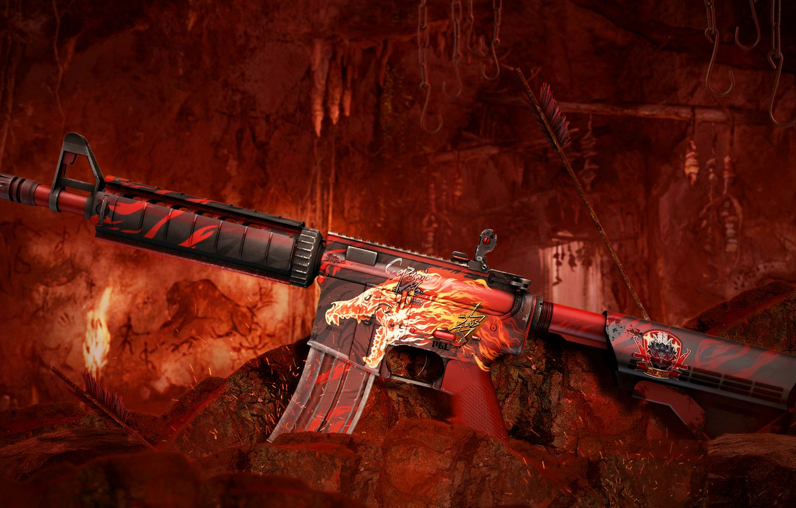
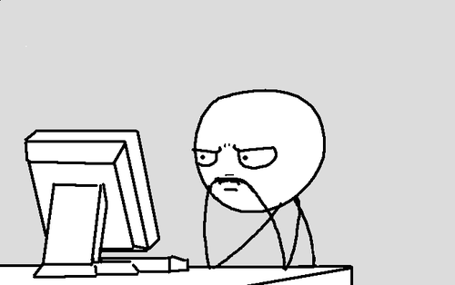
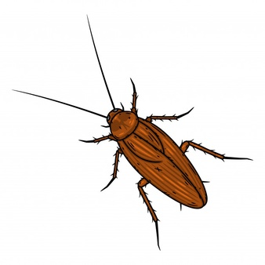

Привіт. Цей сайт про те як Тімур тупить а Андрій йому допомагає
Це я намагаючись зрозуміти що взагали за абракадавру розповідае мені Андрій
Факт: Якщо перевернути таракана на спину він назад сам не зможе перевернутись. Якщо у вас вдома є таракані просто поперевертайте їх на спину
